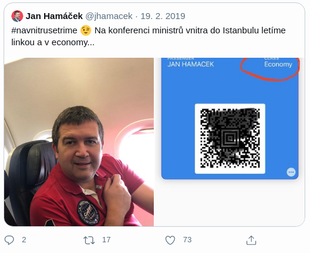

Attack vectors
- Key steal
- MitM attacks
- Steal plain text data from server or while in transit
- Password cracking from DBs
- Users exposing sensitive data on social networks

Security weakness
- Not encrypted sensitive data
- Weak key generation and management
- Weak crypto algorithm, protocol and cipher usage

Impacts
- Identity steal
- Data leak
- Health records
- Credentials
- Personal data
- Credit cards

Is the application vulnerable?
- Which data need to be protected?
- Defined by privacy laws or regulations
- EU - General Data Protection Regulation
- ČR - 101/2000 Sb. Zákon o ochraně osobních údajů
- Passwords, credit card numbers, health records, personal information, business secrets...
- Data transmitted in clear text (HTTP, SMTP, FTP...)
- Old or weak crypto algorithms
- Default crypto keys in use
- Weak crypto keys generated or re-used
- Missing key management and key rotation
- Not enforced encryption (security directives and headers)
- Certificate validation

How to prevent?
- Classify data processed, stored and transmitted, identify sensitive data
- Apply controls as per the classification
- Don't store sensitive data unnecessarily, discard or truncate
- Encrypt all sensitive data
- Ensure up-to-date and strong algorithms, protocols and keys
- Enforce encryption (HSTS...)
- Disable caching for response with sensitive data
- Store passwords using strong and salted hasing functions with delay factor
Password Cracking Experiment
Mall.cz leak
- In 2017 Mall.cz has been pwned.
- Data containing 700K+ emails and phone numbers AND 766 421 passwords in plain text leaked.
- Did mall.cz store passwords in plain text or were the passwords cracked?
- How difficult would it be to crack all these passwords?
Cracked or stored in plain text?
- Back then, the best GPU for cracking was NVIDIA GeForce GTX 1080 Ti.
- Create candidate, compare with created password hashes, get the password.
- Computes 31 billion MD5 hashes/sec.
- GTX 1080 is 20% less performant.
- Where to get the founders edition for running 24/7?
Use the cloud!
- AWS
- NVIDIA Tesla K80 v p2.16xlarge instance with 16× GPU for $14,4/h on-demand, $2,52/h spot
- NVIDIA Tesla M60 v g3.16xlarge instance with 4× GPU for $4,56/h on-demand, $1,35/h spot
- Testla K80 vs. GTX 1080 Ti
- 1× Tesla K80: 4558,4 MH/s, p2.16xlarge instance with 16× GPU = 72,9 GH/s
- 1× GTX 1080: 24 809,8 MH/s
Let's try it
- All 381 908 unique passwords were hashed by MD5 and tried to be cracked.
- Two most known wordlists were used (rockyou.txt and phpbb.txt)
- Basic hashcat rules were used with list of czech words, names and surnames
- Combinations were used (names + surnames)
- Brute force for 8-12 lowercase chars + numbers were used
- PRINCE attack was used (combining words from one wordlist)
Results
- 165K (43 %) of passwords were cracked in 45 minutes.
- Almost all passwords were cracked in 12 hours (935 passwords left).
- Even passwords which were not part of any wordlist were cracked.
- čokoládamilka - was in wordlist without diacritics
- Marketa19.. - name + number + 2 dots
- soyouitknow - 4 english words from wordlists
- lockap7gia - lock + random chars
Verdict
- Passwords could leak hashed and be cracked afterwards.
- Mall.cz says the data come from the tiem when they were using MD5 hashing.
- They started using SHA-1 with salt.
- It would take more time because SHA-1 is much slower and salt is variable.
- Now they use bcrypt - it wouldn't be possible to crack majority of the passwords.
- GTX 1080 Ti - 646 H/s in case of bcrypt with 2^10 iterations
Unintentional Data Exposure
Interior minister's tweet
